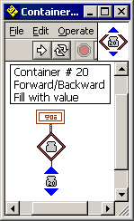
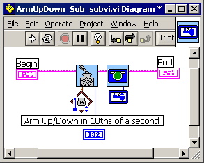

Programmers need an odd set of skills. They need creativity to develop solutions and the discipline to test that those solutions work. Then, they need the patience to find and fix any bugs that appear. This isn't about those skills.
Programmers also need the ability to look at existing solutions, tear them apart, and put them back together. Not to make the solutions work, they already work; to make them work better. Generally better means simpler, more reusable, and more robust. Programmers call this process of remaking working code, refactoring.
At the recent FLL competition, this judge saw several awesome displays of programming. Yet, each could have been better; could have refactored their code.
Refactoring isn't mentioned in the FLL judging rubric, but the level of programming has risen so high that the rubric needs a rewrite.
That I saw, two teams used NXT systems together with RoboLab 2.9 at the FLL competition. Each team used local subroutines in their code to save memory space on the NXT. A "simple" example of such code might look like the code below. There's a lot of code. All it does is drive forward, lift the arm, and drive back.
It's complicated; it works, so it's impressive. A judge should be impressed.
See all the "20"s in the program. "20" is a magic number. It represents the container number that holds the rotation forward/backward. It has a meaning that the programmer knows. The other team members might know. So much better to set the number in one place. RoboLab allows the use of wires to link to a single "20", but wires are too complicated. The better solution is to create a SubVI to hold the "20". Here is that SubVI:
Replacing all the "20"s with the new SubVI yields:
The "19"s represent the container number holding the arm movement. Repeat step 1 for the "19"s. A similar SubVI is created. After the replacements:
This is better. Careful crafting of the SubVI icons gives us a sense of what they do. No one is able to goof up by entering an "18" instead of a "19".
This should be getting repetitious. Find the magic numbers, put them into a SubVI. In this case the "1"s represent the number of the local subroutine that handles moving forward/backward.
Here are LocalSubroutine1 and 2 SubVIs:
Replacing all the "1"s and "2"s yields:
So far, the refactoring has been simple. See the magic number, create a SubVi and use it to replace the magic number. Some refactorings are more complicated. Instead of see the magic number, think find the duplication. Create a SubVI to handle the duplication.
In the code that defines LocalSub1 and LocalSub2, there is duplication in the section of code that performs container math. Instead of replacing a single icon, this SubVI replaces 7 icons.
Here is the AbsoluteValue SubVI:
Replacing it, in two places yields:
Another simple refactoring to handle the selecting of container 19 or 20. Note the crafting of the SubVI icons to combine the ideas of container selection, container number, and the use of the container (forward/backward and arm up/down).
First the SubVIs SelectContainer19 and 20.

Replacment yields:
The calls to run subroutine 1 (forward/backward) and 2 (arm up/down) now appear as obvious candidates for refactoring. You may tempted to think that jumping directly to step 6 is obvious and quicker. You are wrong. Jumping directly creates larger groups of icons. Those large groups are often not as reusable as smaller groups of icons.
Here are the FowardBackward and ArmUpDown SubVIs. Note that the ArmUpDown SubVI violates the rule of finding duplication. There is only one use of the ArmUpDown SubVI. Sometimes it's ok to break the rules.

Replacment yields:
Refactoring makes your program better. Refactoring takes many forms. We've examined one form: removing duplication. The result is not a program that works, since the original program worked. The result is a program that also works.
The result is also a program that is easier to understand.
Is there more that should be refactored? Yes. Is there a limit to how much should be refactored? Yes, when the duplication is gone.
This judge expects to see the very best teams to understand refactoring at next year's FLL competition. They will impress this judge.
Doug Frevert